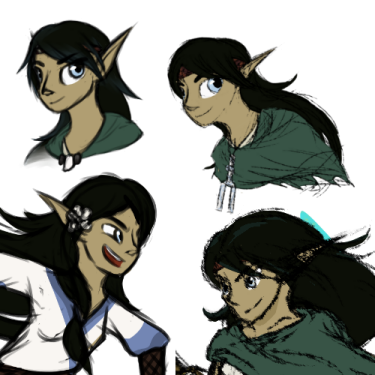
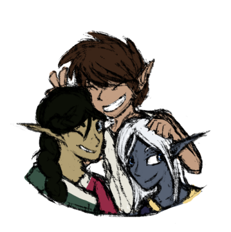

Out of all the druids that wander Dessarin Valley, none may be more infamous than Naeyan Lorafaren, better known as Pebbles (at least, within our Dungeons & Dragons group). From her struggle to save the world from elemental destruction many, many times over to her less exciting domestic disputes, many regard her and her adventuring companions as chaotic yet dependable heroes. With the newfound power and responsibility of becoming an archdruid under her belt, in all likelihood she’ll never catch a break from putting a stop to the evil that roams the valley, or the ridiculous arguments of her home village’s elders.
History of the Chaos

Back in January of 2021, I was invited to a game of Dungeons & Dragons, where the player’s main goal was to stop four elemental cults from summoning their Princes of the Apocalypse, potentially destroying a small valley plagued by their villainy. Lacking any roleplay confidence, I made a stereotypical wood elf druid and named her Pebbles since I couldn’t think of anything better. Since then, Pebbles has quickly become one of my favourite D&D characters through a series of poorly timed jokes, my newfound experiences as a dungeon master, and the undeniable chaos of the adventuring party she occupies. Her design hasn't changed too much over the years, but the minor tweaks are fun to look back on, especially when it comes to improving as an artist.
As for the elf herself, Pebbles hails from Kryptgarden Forest, a secluded community filled primarily with druids of a long-forgotten circle who mostly spend their time avoiding dragon attacks. Though her initial training as a druid gave her a strong connection to the mountains surrounding her home, Pebbles’ magical expertise soon expanded to encompass the elemental might she encountered in her adventures. Hailing from a long line of rangers dedicated to the preservation of nature, she strikes a balance between the botanical expertise of her father’s family and the knowledge-seeking wizardry of her mother. Though her early life was not easy, her snarky attitude keeps her head held high most days, and her persistence has paid off, bringing some sense of normalcy back to her family.
Adventures Across the Forgotten Realms
Though the elf has several noteworthy adventures under her belt, they are best summed up in small parts alongside the humorous incidents that kept the chaos going, and future adventures that’ll pit her and the rest of Dessarin Valley against a familiar foe. In her original adventure, Pebbles:
Grave robbed both as an axebeak and a horse
Made one too many jokes about riversharks that resulted in half of her backstory
Discovered a very unhealthy passion for lightning and arson
Discovered her supposedly dead mother shares similar passions alongside being a cultist
Punched a medusa out of existence as a giant ape
Died alongside her entire party to an evil druid with a lobster claw for a hand
Was revived by an air cultist minstrel not getting paid enough to do it
Watched a frog in a suit and top hat launch her mother off a cliff
Made a deal with a fire genie to get some nap time in before a boss fight
Taunted a fire tornado and got tossed in lava by a dragon while running solely on genie sleep
As of her future endeavors, primarily as a background character to campaigns I’ve run, she’s:
Fought in a tournament against the frog that punted her mom off a cliff (she lost)
Wound up lost in the Feywild (think fairy-tale land) and murdered a hag exactly like the medusa
Got way too in over her head and tried to confront the elemental prince of evil air
As a result of said blunder, got possessed by the ghost of her mother to get an evil spear back
Got punched by the air cultist minstrel after being outed as possessed by a goose
Went home for family therapy with said ghost mom (which has been rather successful!)
Found out her cousin was stupid enough to try and fight the fire tornado again
Got chucked in the same lava pit as before, as a dragon this time
And found out the consequences of dealing with a fire genie featuring a small arson-inclined gremlin with some of her memories from being dead that one time. Weird
So, all-in-all, a never-ending rollercoaster of chaos that only promises to get better as we keep playing! I would link the story documents so you could get the full picture, but half of them are an absolute mess. Instead, you can click on the images above to go to their wiki articles if you want to learn more!
Friends, Family, and Everything In-Between
Ultimately, Pebbles would be nowhere without her friends and family by her side, both as a character narratively and during gameplay. Her entire drive for heroism is to protect the people she loves, whether they’re distant, close, or working towards finding each other again:

Graig Lorafaren and Dara Lorafaren (better known by many as Aerisi Kalinoth) were rather infamous back in their heyday before settling down in Kryptgarden. Graig was once known as Strixhaven’s very own party elf, and as for Dara, her character is modified from the base Princes of the Apocalypse adventure due to needing a plot hook and the “me mum was eaten by a rivershark” joke being too funny to skip out on. Though they’ve had their conflicts, Pebbles still loves her folks dearly, even the arguably insane one.
The Earth Rangers are the original adventuring group founded by Pebbles and others to combat the forces of elemental evil, and several of her closest allies have called that group home. Her main comrades consist of Nordak the literary hill dwarf (the only surviving founder of the group that hasn’t technically died yet), Melody the tiefling air cultist mentioned earlier who is currently enjoying the not-destroyed world with her girlfriend on a pirate ship, and Kermit. Kermit is an agent of chaos and is positively terrifying. Dungeon mastering for that menace is an exercise in patience. That is all.
Finally, Pebbles’ closest friends and family are her cousins, Bolyssa Bolting, a plucky druid/wizard half-elf and Casmir Kalinoth, the egotistical, smooth-talking inheritor of the Kalinoth sorcery and a fine wizard in his own right. All three were incredibly close as kids before being separated by unfortunate circumstances, but despite that, they’re doing their best to reunite and spend some much-needed quality time together, even if getting to that point involves summoning and slaying the mad god responsible for the elemental evil crisis in Casmir’s case. In the meantime, have some doodles of them as kids!
Want to read more about these characters? My original ramblings were way too long to be practical for the website, but you can peruse their original articles here!
References & Copyright
Aerisi Kalinoth, Dessarin Valley, Princes of the Apocalypse, & the Forgotten Realms setting, alongside player character races & classes belong to Wizards of the Coast LLC. For anyone getting into D&D, be it your first time or as a veteran player, D&D Beyond is an excellent first-party resource where you can purchase the sourcebooks for materials seen on this website.
Nordak belongs to Xavier Swihart, and Kermit belongs to Kaiden Janzen. If either of you are reading this, don’t worry about the spoilers and get off my site. Art featured on this site & other characters belong to Elise Howe.